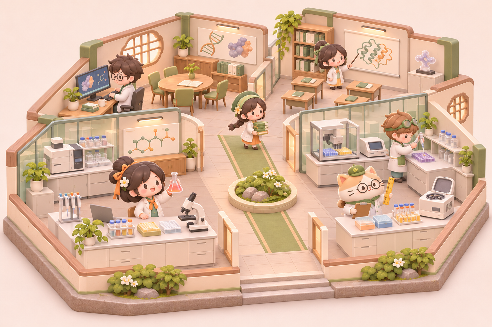

交互设计样稿
01
· 示例数据，不读取游戏存档
重置样稿
药
新药物语
一间小小研究所，一件值得做的事。
星火研究社
第 3 年 ·
12
周
可用资金
¥
2,860
万
研究团队
5 位伙伴 · 2 项研究
我们的研究所
今天，也向前一点。
点房间安排研究，点伙伴看看他的心愿。

临床办公室
1 项待决定
共研教室
个人课题
发现实验室
模型复核已完成
制剂与质量室
工艺验证中
心愿
刻度喵
临床团队等你做一个决定。
伙伴们
点击查看
烧
烧杯仔
化学 · 精英
丸
小药丸
工艺 · 精英
芽
豆芽博士
生物 · 见习
泡
泡泡鼠
毒理 · 见习
喵
刻度喵
临床 · 有新心愿
✧
一段成长，留下来了
曲线里的空白
“漂亮的曲线，也要听见没有被记录的声音。”
把这一页留在手记里